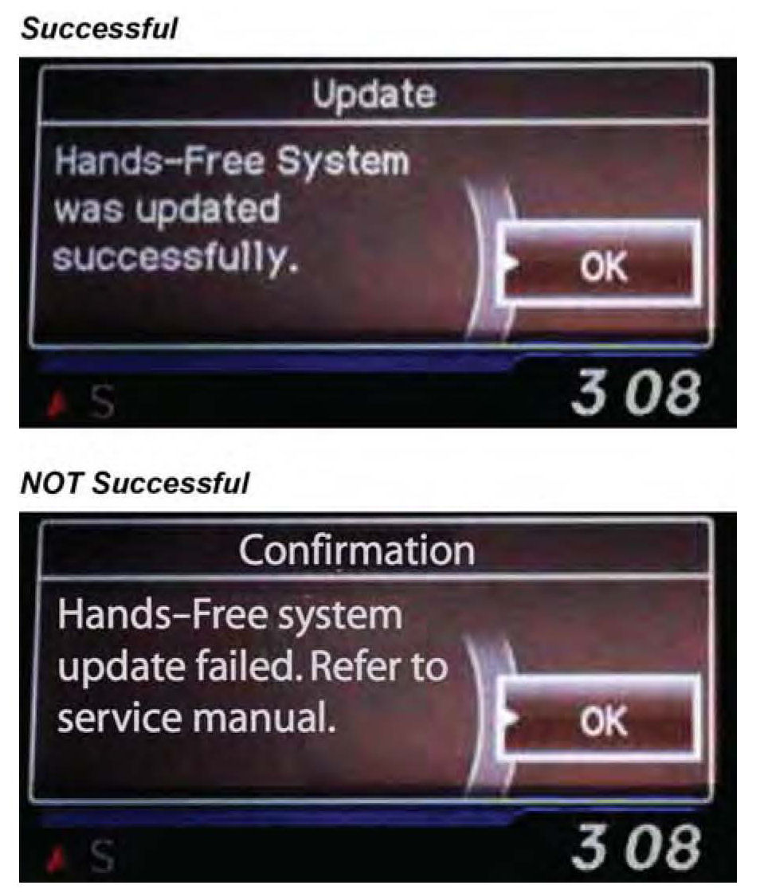

Vehicles Without Navigation
Vehicles without NavigationNOTE:
Failure to follow the procedures and precautions in this bulletin may damage the HFL control unit.
1. Connect a jumper battery to the vehicle and leave it connected during this entire procedure to maintain a steady voltage.
2. Press the engine start/stop button to select the vehicle ON mode.
3. Press and hold the audio preset No.1 button, then press and hold the audio preset No.6 button. Press and hold the Volume/Power knob. Release the buttons and the knob once the audio unit enters into the self-diagnosis mode and the "A-Diag DIAG" screen appears.
4. Press and hold the PHONE button for at least 5 seconds to enter the HFL diagnostic mode. One of the following screens appears: "A-Diag XXXXX OK" or "A-Diag---."
5. On the HDS laptop, double-click the HFL Control Unit Update icon to launch the Honda HFL (HFT) Control Unit Update Tool (HFL update tool).
NOTE:
The HDS laptop must be connected to an AC outlet during the reflash process and must be within a distance of 21 feet to the vehicle. Do not allow the HDS laptop to go into sleep or hibernate mode during the reflash process. If this occurs, the Bluetooth connectivity between the HDS laptop and the vehicle's HFL system will be dropped, and the reflash process will be interrupted. It will then be necessary to restart the reflash procedure. See your laptop manufacturer's instructions or your system administrator for assistance to change these settings.
6. Press the audio preset No.2 button several times until the "A-diag UPDATE" screen appears on the i-MID.
7. Press the selector knob on the audio unit to change the HFL update screen. A four-digit PIN code appears. Write it down on a piece of paper or on the RO, and leave it in the vehicle.
NOTE:
This PIN is required to complete the HFL update and to re-establish communication if the update process is interrupted. If this PIN is lost, forgotten, or otherwise misplaced, and an interruption to the reflash process occurs, the HFL control unit will remain stuck in reflash mode, and you will be unable to complete the update. If this happens, you must replace the HFL control unit.
8. In the HFL update tool, click on the Bluetooth icon in the upper left-hand corner of the HFL Control Unit Update screen to prepare the HDS laptop for the pairing process with the vehicle's HFL control unit.
*NOTE:
If an active Bluetooth adapter is not found on the HDS laptop, this error message will appear. Please review the REQUIRED TOOLS AND EQUIPMENT section of this publication for a recognized Bluetooth device. Contact your IT support for additional help.*
9. In the HFL update tool, the Pair with HFL" window pops up. Wait a few seconds for the display to show All Detected Bluetooth Devices." If no devices are found after 30 seconds, click on Refresh.
NOTE:
If the HFL control unit is unable to establish a Bluetooth connection with the HFL update tool after5 minutes, it times out. If this occurs, reboot the HDS laptop, press the engine start/stop button to select the OFF mode, and go back to step 2.
10. In the HFL update tool, select the correct Bluetooth device (if more than one appears) that matches the HandsFreeLink ID code shown in the vehicle's display screen.
NOTE:
There may be more than one Bluetooth device listed on the HFL update tool "Pair With HFL (HFT)" screen. Select the correct HFL ID from the list.
11. In the HFL update tool, enter the four-digit PIN from the vehicle's display screen into the lower left-hand corner of the pop-up window. Click on Pair to begin the pairing process.
12. Wait for the HFL update tool to complete the Bluetooth pairing process.
13. In the HFL update tool, the Open Update Package" window pops up when the Bluetooth pairing process is complete. The HFL update tool automatically determines which version of the HFL software is present, and which updates are on the HDS laptop. Click OK to begin the HFL control unit reflash process.
NOTE:
If the HFL software is current and no update is required, the following notification pops up on the HDS laptop.
14. The HFL reflash process begins. Allow several minutes for the programming to complete. The blue bars indicate the programming status and progression.
NOTE:
Do not press the engine start/stop button to select the OFF mode while the HDS laptop is transferring files to the HFL control unit. Doing so will damage the HFL control unit. If Bluetooth connectivity between the HDS laptop and the HFL control unit is lost, the ignition must remain ON, but the HDS laptop may be rebooted and the HFL update tool may be restarted, using the four-digit PIN recorded in step 7.
15. On the HFL update tool, a pop-up window alerts you when the reflash process is finalizing, and then another pop-up informs you that the reflash process is complete. Click OK.
NOTE:
Failure to wait for the HFL update tool message Updates Complete" to display prior to pressing the star/stop button to select the OFF mode will interrupt the HFL programming and will damage the HFL control unit.
16. The HFL update tool will indicate the update is complete, and automatically disconnects the Bluetooth connection from the HFL control unit. Close the HFL update tool by clicking on the "X" in the upper right-hand corner.
17. The vehicle's display screen indicates the update status:
^ If successful, an update screen and subsequent updated successfully" messages are displayed. Press the engine start/stop button to select the OFF mode. Go to step 18.
^ If not successful, a confirmation screen indicates that the process failed. Disregard the reference to the service manual. Go to step 20.

NOTE:
Wait at least 10 seconds before continuing to the next step.
18. Confirm the HFL control unit is updated: Repeat steps 2 through 4, then go to step 19.
19. Press the audio preset No.2 button several times to cycle through the display screens until you see the "A-Diag XX.XX.X" screen. Verify that the correct software version is installed.
NOTE:
The first "A-Diag" screen displays the first five digits of the software version. Press the No.2 button to see the last two digits.
If an "A-Diag ---" screen appears, turn the audio unit OFF. Repeat steps 2 and 3 then press the PHONE" button for at least 5 seconds. The HFL diagnostic screen is now visible. Press the audio preset button No. 2 until the "A-Diag XX.XX.X" screen is displayed. Verify that the correct software version is installed.
^ If the software is updated to the correct version, press the engine start/stop button to select the OFF mode. The reflash process is complete.
^ If the software is not updated, go to step 20.
20. Press the engine start/stop button to select the OFF mode.
21. Repeat steps 2 through 6, then go to step 22.
22. Press the selector knob on the audio unit to change the HFL update screen. A different PIN code is displayed; ignore it. You'll use the PIN you wrote down in step 7.
NOTE:
The original PIN is required to complete the HFL update and to re-establish communication if the update process is interrupted. If the original PIN is lost, forgotten, or otherwise misplaced, and an interruption to the reflash process occurs, the HFL control unit will remain stuck in reflash mode, and you will be unable to complete the HFL update. If this happens, you must replace the HFL control unit.
23. In the HFL update tool, click on the Bluetooth icon to pair the vehicle's HFL control unit to the HDS laptop.
*NOTE:
If an active Bluetooth adapter is not found on the HDS laptop, this error message will appear. Please review the REQUIRED TOOLS AND EQUIPMENT section of this publication for a recognized Bluetooth device. Contact your IT support for additional help.*
24. In the HFL update tool, the Pair with HFL" window pops up. Wait a few seconds for the display to show All Detected Bluetooth Devices." If no devices are found after 30 seconds, click on the Refresh button.
25. In the HFL update tool, select the correct Bluetooth device (if more than one appears) that matches the HandsFreeLink ID Code shown in the vehicle's display screen.
NOTE:
There may be more than one Bluetooth device listed on the HFL update tool Pair With HFL(HFT)" screen. Select the correct HFL ID from the list.
26. In the HFL update tool, enter the original 4-digit PIN (recorded in step 7) into the lower left corner of the popup window. Click Pair to start the pairing process again.
NOTE:
If the original PIN is lost, forgotten, or otherwise misplaced, the HFL control unit will be stuck in reflash mode, and you will be unable to complete the HFL update. If this happens, you must replace the HFL control unit.
27. Repeat steps 11 through 17 to repeat the HFL control unit update procedure.